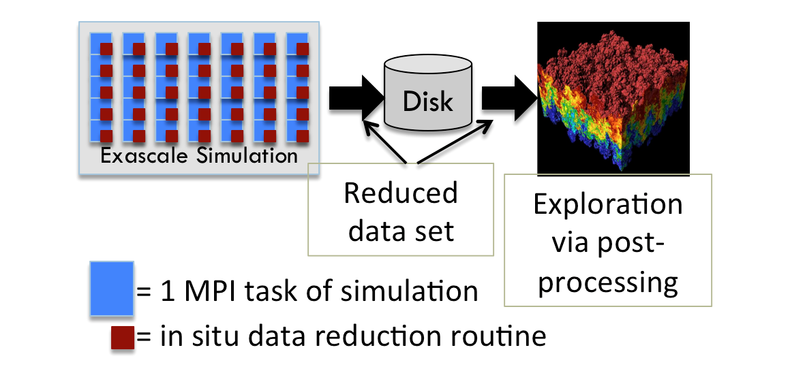

|
The In Situ Reduction, Post Hoc Exploration paradigm: How to reduce data to a small enough form that it can be saved to disk and yet maintain enough accuracy to be useful for analysis? Overview
 An important consideration for in situ processing is whether the desired visualizations are known a priori. When they are known a priori, the visualizations can be specified ahead of time and carried out as the data is generated. When they are not known a priori, in situ processing is more complicated, since it is not clear which visualizations to carry out. One approach is to refuse in situ processing, i.e., to do post hoc processing instead, although saving data less frequently. The problem with this approach is that I/O constraints may cause the data to become so sparse temporally that important phenomena may be lost (i.e., a phenomenon begins after one time slice is saved and ends before the next one) or that features cannot be tracked over time.Another approach when lacking a priori knowledge, and the research challenge this webpage focuses on, is to use a combination of in situ and post hoc processing. Specifically, data is transformed and reduced in situ, the resulting reduced data is saved to disk, and then this data is explored later in the traditional post hoc manner. The benefit of this idea is that the reduced data could be small enough to store sufficient temporal frequency even in the face of severe I/O constraints. The remainder of this section is organized in three parts: (1) Lagrangian flow, (2) wavelet compression, and (3) additional results. Lagrangian Flow
While many researchers have considered the benefits of considering flow from the Lagrangian perspective, our work was the first to envision using Lagrangian basis flows as an in situ data reduction operator. The idea is to extract Lagrangian basis flows (i.e., pathlines) in situ, to store the basis flows to disk, and then later to do post hoc exploration by interpolating from the basis flows. The Lagrangian approach has an advantage over the traditional (Eulerian) approach, as its basis flows are calculated in situ, giving it access to all spatiotemporal data. As a result, the basis flows accurately capture an interval in time. This contrasts with the Eulerian method (the traditional approach), where time steps of vector data are stored and post hoc analysis requires temporal interpolation between these time steps, introducing error. In all, Lagrangian methods have the potential to represent more information per byte than the Eulerian approach, enabling more accurate analysis for the same storage or enabling the same accuracy with less storage. The initial work, a collaboration by UC Davis Ph.D. student Alexy Agranovsky, Hank Childs, and others, was on the viability of the approach. Example results from this work included 12X accuracy improvements using the same storage, and the same accuracy with 64X less storage. This work was awarded Best Paper at LDAV14. After this initial work, CDUX alumnus Sudhanshu Sane pursued improvements to the Lagrangian approach as part of his dissertation. Sudhanshu started by performing more extensive evaluations of the initial work, in order to provide a better baseline for future comparisons. His second work extended the possibilities for increasing efficiency. While the initial work placed pathlines at regular seeding locations and terminated them at regular time intervals, which we subsequently termed "fixed duration / fixed placement" (FDFP), Sudhanshu introduced "variable duration / variable placement" (VDVP) basis flows, which led to factor-of-two improvements. That said, his key contribution here was an interpolation scheme that can deal with VDVP basis flows, opening the door to new strategies that go beyond the FDFP's more regimented approach. Sudhanshu's third work optimized the time it takes to calculate basis flows in situ, reducing the burden on simulation codes. His main idea was to terminate basis flow calculation at block boundaries, creating a communication-free approach. While this approach will clearly improve performance, the surprising aspect was how little error it introduced. This work was awarded Best Paper at EGPGV21. Finally, Sudhanshu's fourth work on Lagrangian flow put together all of his previous results and showed viability for both cosmology and seismology simulations on Oak Ridge's Summit supercomputer. This work was awarded Best Paper for ICCS21's Main Track, which received 650 submissions. Wavelet Compression
Our group has produced several results considering the viability of wavelet compression as an in situ reduction operator, and this topic was the primary dissertation question of
Samuel Li.
Sam's first research thrust
was on
evaluating the integrity of scientific data sets after undergoing a wavelet transformation.
In this work, Sam also demonstrated the benefit of bringing in modern wavelet approaches (CDF kernels and prioritized coefficients) for scientific data.
Sam's second research thrust was on how to carry out wavelet transforms on exascale computers.
Sam had two works on this front, one on
portably performant approaches
and another on
achieving better accuracy by leveraging deep memory hierarchies to embrace temporal coherence.
Sam’s final research thrust considered whether wavelet transformations could be accomplished within simulation codes' time budgets, and evaluating their savings at scale. Sam's
work on this topic
included runs of up to 1000 MPI ranks on NCAR’s Cheyenne supercomputer.
These works combined to answer his dissertation question: yes, wavelet compression is a viable reduction operator for exascale computing.
Finally,
Nicole Marsaglia
published an extension to this work,
on dynamically adapting the I/O budget between the wavelet compressors on each node to where it will do the most good.
Additional Results
While our in situ reduction research is deepest on Lagrangian flow and wavelets, we also have considered other approaches. First, Nicole Marsaglia looked at using temporal intervals, which can be useful for simulations that evolve slowly in time. Second, James Kress considered binning, and showed its applicability for fusion simulations. Third, Matt Larsen contributed a new technique for accelerating the rendering of multiple images simultaneously, motivated by the in situ reduction approach taken by the Cinema project (and others) where in situ processing is used to generate thousands of images, rather than save out mesh and field data. Finally, while not a research result, Samuel Li produced a very useful survey on data reduction operators for his Area Exam Paper, which was ultimately published in Computer Graphics Forum. CDUX People
Publications (Lagrangian Flow)
Publications (Wavelets)
Publications (Additional Results)
|